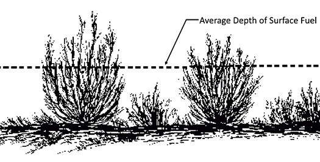

|
Fuel Bed Depth |
Fuel bed depth represents the depth of the surface fuel and is a fuel model parameter; it does not include the duff layer. Fuel bed depth is sometimes called fuel bed bulk depth. A single fuel bed depth value must be used for each fuel model. If fuel beds vary greatly, you have the option of using two fuel models to describe an area. See Two Fuel Model Options for more information.
The Rothermel (1972) fire spread model calculations are highly sensitive to the fuel bed depth. Since fuel bed depth is assumed to be uniform for Rothermel’s fire spread model, you must estimate a characteristic value for the area. The depth of the fuel bed determined as an output of the planar intercept method (Brown 1974) is called the "average high particle depth." Albini and Brown (1978) showed that for logging slash fuel beds, the fuel bed depth is approximately 63.3% of the average high particle depth.
For the special case fuel model, western aspen, fuel bed depth is determined by which aspen fuel model is selected. For more information on western aspen fuel parameters, see Western Aspen Details.
For the special case fuel model, palmetto-gallberry, fuel bed depth is calculated as 2/3 of the P-G Height of Understory variable entered on the worksheet. For more information on palmetto-gallberry fuel parameters, see Palmetto-Gallberry Details.
For the special case fuel model, chaparral, fuel bed depth is entered directly and used to determine the total fuel load. For more information on chaparral fuel parameters, see Chaparral Details.
| I/O | Module | If | Notes |
| Input | SURFACE | If Fuel is entered as fuel parameters is selected as an input option. | If Fuel is entered as fuel models (standard or custom) or the special case fuel model, western aspen is selected as an input option, then the appropriate value from the fuel model is used. |
| Output | SURFACE | If Fuel is entered as special case fuel model, palmetto-gallberry is selected as an input option. |
|  |